A gentle, source-linked guide
Traditions, held with care
Explore traditional ideas alongside their evidence and limits.
A map for learning
The acupoint atlas shows 13 searchable points with WHO written landmarks and approximate front, back and local diagrams. It is an orientation aid, not an exact treatment map.
Comfort, without promises
Some acupressure research on primary period pain is promising, but study quality and safety reporting limit confidence. The atlas does not prescribe a pressure routine or label points pregnancy-safe.
Give safety its own space
Do not choose needles, burning moxa or medicinal herbs from an app. Discuss your symptoms, pregnancy or postpartum context, medicines and exact products with qualified care professionals.
Know when comfort is not enough
Severe or worsening pain, heavy bleeding or feeling faint needs medical attention. A traditional explanation must never delay assessment.